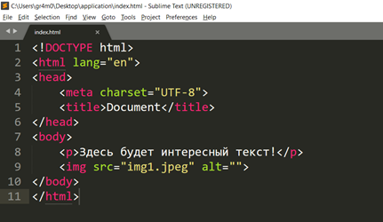
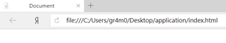
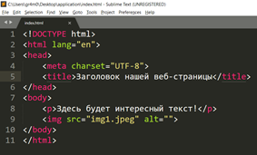
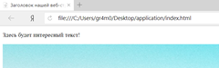
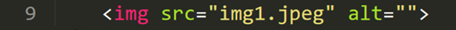
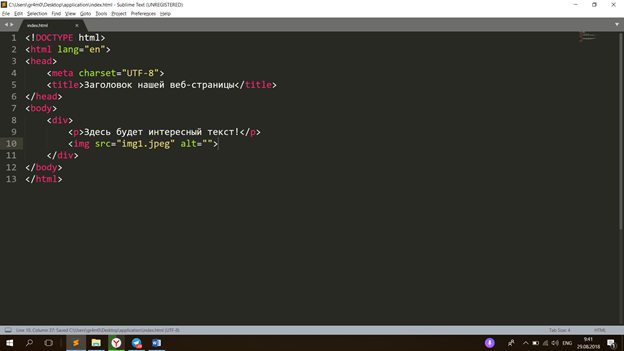
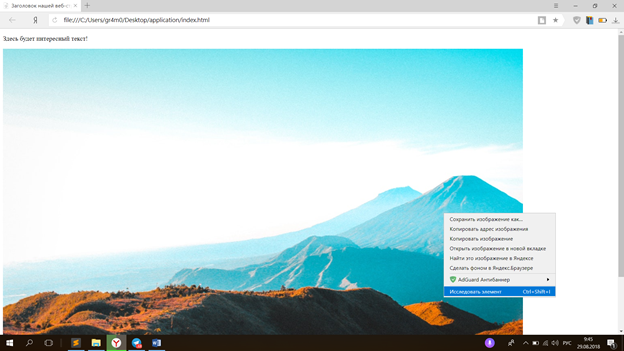
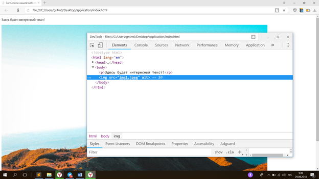

Второе занятие
Второе
занятие
На этом
занятии нами будут рассмотрены основные html-теги.
Итак, начнем.
Для
начала нужно ввести определение тега: тег
HTML или
элемент HTML — это основная структурная единица
веб-страницы. Теги
являются контейнерами для контента (содержимого) нашей страницы. Теги читаются
браузером, поэтому для корректного отображения элементов на веб-странице
необходимо писать грамотный и синтаксически правильный код! Данную фразу нужно
повторять детям постоянно.
На любой веб-странице, сайте или веб-приложении есть теги. Давайте рассмотрим их, начиная с иерархической верхушки html-документа.

На первой
строчке мы видим директиву DOCTYPE, она
сообщает браузеру, что мы используем синтаксис HTML пятого
стандарта. Данная строчка является общеобязательной и крайне желательно
добавлять ее на каждую веб-страницу. Но так как она автоматически генерируется с
помощью Emmet, от нас
требуется лишь не удалять ее. Вторая строчка содержит в себе тег html.
Обратите внимание, что все теги написаны в треугольных кавычках, например,
<html>.
Также необходимо ввести понятие «парных тегов». Парными называются теги, которые
имеют открывающий и закрывающий тег и в которые могут представлять собой
контейнеры для других тегов, либо содержать текстовую информацию (например, в
тег img
нельзя,
поэтому он является непарным). Приведем пример: на второй строчке у нас есть
открывающий тег <html>, а
на 11 закрывающий — </html>.
Синтаксис закрывающих тегов отличается от открывающих только символом слеша «/»
перед названием тега.
Возвращаемся
к структуре документа:
Тег
html
является
контейнером для всех остальных html-тегов.
Концепцию вложенности можно объяснить на простом примере: все знают, что такое
матрешка. HTML-теги
работают по похожей схеме, отличие лишь в том, что количество тегов-детей в
теге-родителе неограниченно.
Переходим
к третьей строчке. Парный тег head
или
голова документа. Данный тег представлен на веб-странице в единственном
экземпляре. Тег head
не
содержит в себе контента, отображаемого на странице. Он нужен для подключения
внешних документов путем указания ссылок на них, различных meta-тегов,
заголовка страницы во вкладке, настройке SEO-оптимизации
и так далее. Детям следует запомнить, что тег head
никогда
не несет в себе какого-либо контента.
Переходим
к тегу title.
Title —
заголовок нашей веб-страницы.



<meta
charset="UTF-8"> данная строчка устанавливает формат кодировки Юникод. Это
нужно для корректного отображения русского языка во всех
браузерах.
Теперь
рассмотрим тег body
или
«тело» нашего документа. Тег body
является
парным. В нём содержится весь контент нашей веб-страницы. Таким образом, если
возвращаться к аналогии с матрешкой, то тег body является
матрешкой для контента.
Переходим
к тегу p. Он
также является парным. Название данного тега является сокращение от английского
слова paragraph.
Единственным назначением «параграфа» является хранение текстовой
информации.
Тег
img, как
было указано выше, не является парным. Img
или
image означает
в переводе с английского «изображение» — это тег для размещения изображения на
веб-странице. Здесь стоит отметить, что это лишь один из способов размещения
изображений. Мы добрались до еще одного важного понятия в html-разметке
— атрибут.

Атрибут —
это свойство html-элемента.
Для тега img
есть два
обязательных атрибута: src
(source —
источник, путь) — абсолютный или относительный путь до изображения в файловой
системе; alt
(alternative —
альтернативный) — альтернативный текст, размещаемый браузер при неудачной
загрузке изображения.
Атрибуты
пишутся в открывающем теге до закрывающей треугольной кавычки. Небольшой
лайфхак: чтобы выйти из текущей директории нужно прописать в src=”../директория_из_которой_вы_хотите_выйти/какая-то_директория/имя_файла.расширение”
Тег
div
или
division
—
дробление, разделение — универсальный тег, может содержать в себе другие теги,
текстовую информацию. «Див» является тегом в классическом понимании контейнера.
Давайте, рассмотрим это на примере:

Мы
«обернули» наш контент в тег div.
Следует
отметить, что тег div
очень
широко используется в вёрстке веб-страниц для деления страницы на секции,
объединения схожих элементов в группы, выделения однотипных контентных
единиц.
Теперь рассмотрим один из важнейших элементов веб-разработчика — веб-инспектор в браузере. Для того чтобы открыть веб-инспектор нужно открыть браузер, нажать правой кнопкой мыши на страницу и выбрать пункт «Исследовать элемент» или «Посмотреть код элемента».


Так
выглядит веб-инспектор, на следующих занятиях мы детально рассмотрим все его
полезные функции. А сейчас обратите ваше внимание на то, что код нашей
веб-странице удобно отображен в браузере и полностью совпадает с тем, что
написано у нас в Sublime
Text
3.
Откройте
различные веб-сайты и «проинспектируйте» элементы на нем.